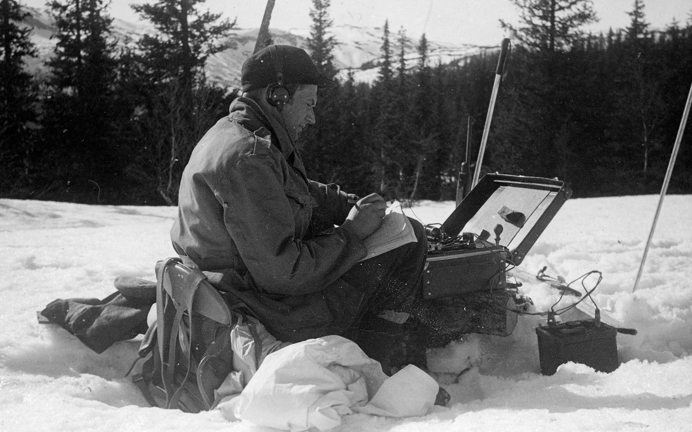
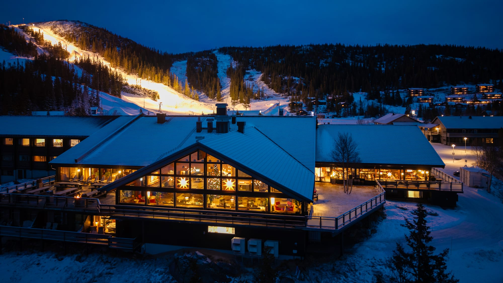

AES 25 years of competing designs and cryptanalysis
Despite 25 years of intense study, no truly dangerous attacks against AES have emerged. At the same time, progress in block-cipher design and cryptanalytic techniques has given us a much deeper understanding of what makes designs secure and how they might fail. This raises natural questions: Are there fundamentally better designs? Are there more powerful forms of cryptanalysis yet to be developed? And looking ahead, taking note of NISTs interest in standardizing Rijndael-256, will Rijndael remain the preferred interoperable standard in another 25 years?
Gaustablikk Fjellresort is located approximately 180 km from Oslo. Here are the best ways to reach it in 2026:
The easiest and fastest is by rental car (Approx. 2.5 - 3 hours)
The fastest route from Oslo is via E134 towards Drammen and Kongsberg. From Kongsberg, follow Route 37 towards Rjukan, and then follow the signs up to Gaustablikk.
Roads are easy to drive at this time of the year.
Public Transport (Bus & Train)
You can take the VY Train (R12) from Oslo Airport or Oslo Central Station direct to Kongsberg. From Kongsberg, there are connecting buses (Route 185) to Rjukan. It is also possible to take Route 185 from Oslo. Rjukan up to Guasta mountain is about 20 min drive with a taxi.

Participants
Joan Daemen (Radboud University)
Vincent Rijmen (KU Leuven)
August Bariant (ANSSI)
Tim Beyne (KU Leuven)
Christina Boura (Université Paris Cité)
Patrick Derbez (University of Rennes)
Orr Dunkelman (University of Haifa)
Henri Gilbert (ANSSI)
Lorenzo Grassi (Eindhoven University)
Shay Gureon (University of Haifa)
Rachelle Heim (UCLouvain)
Tor Helleseth (UiB)
Tetsu Iwata (Nagoya University)
Jérémy Jean (ANSSI)
Gregor Leander (Bochum)
Gaetan Leurent (INRIA Paris)
Willi Meier (FHNW)
Bart Mennink (Maastricht University)
Maria Naya Plasencia (INRIA Paris)
Morten Øygarden (UiB)
Leo Perrin (INRIA Paris)
Bart Preneel (KU Leuven)
Håvard Raddum (Simula UiB)
Christian Rechberger (TU Graz)
Sondre Rønjom (UiB)
Arne Sandrib (UiB/NSM)
Le Van Schröer (BSI)
Martijn Stam (Simula UiB)
Lukas Stennes (Bochum)
Stefano Tessaro (University of Washington)
Yosuke Todo (NTT)
Øyvind Ytrehus (UiB)
Information
Gausta Resort

Located at the foot of the iconic Gaustatoppen mountain in Telemark, Gausta is one of Norway's most snow-secure and breathtaking year-round destinations. Experience a unique mountain atmosphere with modern facilities and wild nature.
In Top Secret Dining, participants are taken back in time to the Cold War through storytelling and dramaturgy, to an era when the Iron Curtain stretched across Europe. Throughout the 1950s and 1960s, tensions between the superpowers intensified, and Norway stood as a supporter of the United States. The experience focuses on this atmosphere of tension. Guests are invited to join a thrilling adventure featuring professional actors, excellent food, and captivating stories, all set inside what was once one of Norway’s most secret military defense facilities. The full experience lasts approximately 4 hours.
The package includes:
Round-trip transportation by the funicular railway.
Dramaturgy and storytelling with live acting.
A three-course dinner in the former listening and transmission hall at the summit.
Cognac tasting of Gaustatoppen XO directly from the barrel.
More information
More about the concept and a video teaser can be found here: